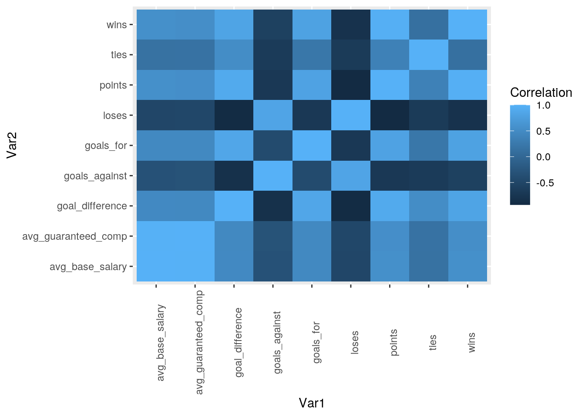
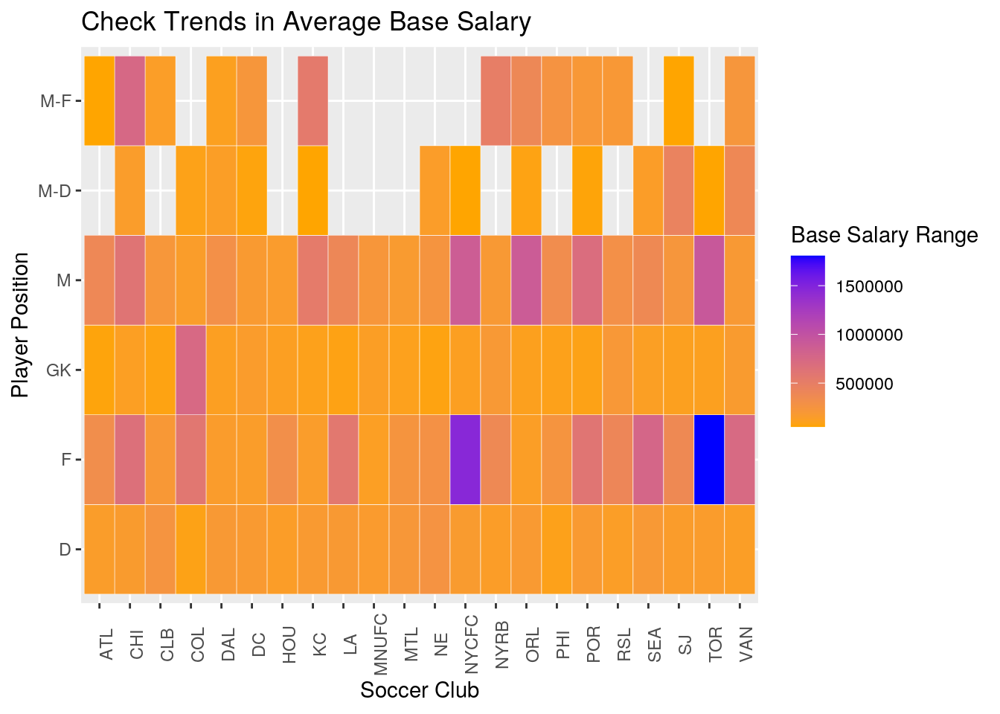
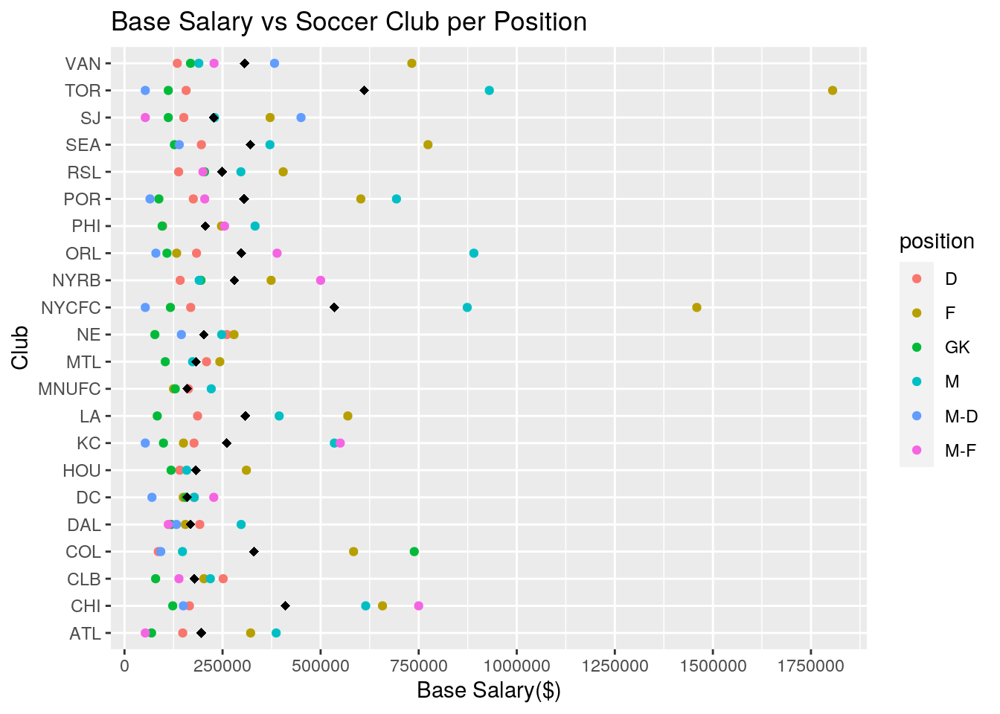

library(tidyverse)
library(cluster)
salaries_dataset <- read_csv("mls-salaries-2017.csv")
club_games <- read_csv("new club games.csv")
avg_salary <- salaries_dataset %>% group_by(club, position) %>%
summarise(avg_base_salary = mean(base_salary),
avg_guaranteed_comp = mean(guaranteed_compensation))
# without position
salary_without_position <- salaries_dataset %>% group_by(club) %>%
summarise(avg_base_salary = mean(base_salary),
avg_guaranteed_comp = mean(guaranteed_compensation))
club_games %>% pivot_longer(cols = starts_with("goal"),
names_to = "goals", values_to = "goals_scored") %>%
pivot_wider(names_from = "goals", values_from = "goals_scored")## # A tibble: 22 x 9
## club games_played wins loses ties points goals_for goals_against
## <chr> <dbl> <dbl> <dbl> <dbl> <dbl> <dbl> <dbl>
## 1 ATL 34 15 9 10 55 70 40
## 2 CHI 34 16 11 7 55 61 47
## 3 COL 34 9 19 6 33 31 51
## 4 CLB 34 16 12 6 54 53 49
## 5 DC 34 9 20 5 32 31 60
## 6 DAL 34 11 10 13 46 48 48
## 7 HOU 34 13 10 11 50 57 45
## 8 KC 34 12 9 13 49 40 29
## 9 LA 34 8 18 8 32 45 67
## 10 MNUFC 34 10 18 6 36 47 70
## 11 MTL 34 11 17 6 39 52 58
## 12 NE 34 13 15 6 45 53 61
## 13 NYCFC 34 16 9 9 57 56 43
## 14 NYRB 34 14 12 8 50 53 47
## 15 ORL 34 10 15 9 39 39 58
## 16 POR 34 15 11 8 53 60 50
## 17 PHI 34 11 14 9 42 50 47
## 18 RSL 34 13 15 6 45 49 55
## 19 SJ 34 13 14 7 46 39 60
## 20 SEA 34 14 9 11 53 52 39
## 21 TOR 34 20 5 9 69 74 37
## 22 VAN 34 15 12 7 52 50 49
## # … with 1 more variable: goal_difference <dbl>I created two main datasets to utilize. One absent of the positions so there are not repeats of the clubs or any other variable from the second dataset I chose. I demonstrated my knowledge of the pivot functions as I will not need them until later on. I decided to leave the players names out of the first dataset as I deemed it was not relavent towards the data I was collecting.
MLS_fulldata <- full_join(avg_salary, club_games, by = c(club = "club"))
# without position
MLS_position_removed <- full_join(salary_without_position,
club_games, by = c(club = "club"))I decided to do a full join so I could utilize all of the variables from my datasets. No additional variables were dropped during this merge.
# position w highest avg salary
MLS_fulldata %>% group_by(position) %>% summarize(avg_sal = mean(avg_base_salary)) %>%
filter(avg_sal == max(avg_sal))## # A tibble: 1 x 2
## position avg_sal
## <chr> <dbl>
## 1 F 484155.# club w highest avg salary
MLS_fulldata %>% group_by(club) %>% summarize(avg_sal = mean(avg_base_salary)) %>%
filter(avg_sal == max(avg_sal))## # A tibble: 1 x 2
## club avg_sal
## <chr> <dbl>
## 1 TOR 611441.# sum, median, sd, mean avg comp per club
MLS_fulldata %>% group_by(club) %>% summarize(sum_comp = sum(avg_guaranteed_comp),
med_comp = median(avg_guaranteed_comp), sd_comp = sd(avg_guaranteed_comp),
mean_comp = mean(avg_guaranteed_comp))## # A tibble: 22 x 5
## club sum_comp med_comp sd_comp mean_comp
## <chr> <dbl> <dbl> <dbl> <dbl>
## 1 ATL 1086193. 160998. 175028. 217239.
## 2 CHI 2668379. 402089. 319709. 444730.
## 3 CLB 964254. 215833. 73401. 192851.
## 4 COL 1856476. 161249. 365573. 371295.
## 5 DAL 1117361. 154300. 87705. 186227.
## 6 DC 1057656. 179516. 56710. 176276.
## 7 HOU 750387. 157683. 88138. 187597.
## 8 KC 1653966. 182285. 231393. 275661.
## 9 LA 1504760. 328721. 301591. 376190.
## 10 MNUFC 725874. 174594. 41755. 181469.
## 11 MTL 755943. 200272. 60432. 188986.
## 12 NE 1078760. 266789. 96439. 215752.
## 13 NYCFC 2733178. 181090. 622576. 546636.
## 14 NYRB 1473961. 212880. 146129. 294792.
## 15 ORL 1904913. 169518. 333306. 317485.
## 16 PHI 1127338. 262921. 111265. 225468.
## 17 POR 2254445. 198096. 325693. 375741.
## 18 RSL 1337244. 210717. 121539. 267449.
## 19 SEA 1835834. 215661. 327784. 367167.
## 20 SJ 1496672. 207770. 175682. 249445.
## 21 TOR 3416628. 172939. 862866. 683326.
## 22 VAN 2140675. 239346. 296581. 356779.# position in each club w highest avg
MLS_fulldata %>% group_by(club, position) %>% summarize(avg_sal = mean(avg_base_salary)) %>%
filter(avg_sal == max(avg_sal))## # A tibble: 22 x 3
## # Groups: club [22]
## club position avg_sal
## <chr> <chr> <dbl>
## 1 ATL M 386666.
## 2 CHI M-F 750000
## 3 CLB D 251551.
## 4 COL GK 738717.
## 5 DAL M 297400.
## 6 DC M-F 227606.
## 7 HOU F 310751.
## 8 KC M-F 550008
## 9 LA F 569331.
## 10 MNUFC M 221169.
## 11 MTL F 243045.
## 12 NE F 279221.
## 13 NYCFC F 1458987.
## 14 NYRB M-F 500000
## 15 ORL M 890662.
## 16 PHI M 332876.
## 17 POR M 693335.
## 18 RSL F 404606.
## 19 SEA F 773726.
## 20 SJ M-D 450000
## 21 TOR F 1805256.
## 22 VAN F 732502.# club w highest avg for each position
MLS_fulldata %>% group_by(position, club) %>% summarize(avg_sal = mean(avg_base_salary)) %>%
filter(avg_sal == max(avg_sal))## # A tibble: 6 x 3
## # Groups: position [6]
## position club avg_sal
## <chr> <chr> <dbl>
## 1 D NE 260982.
## 2 F TOR 1805256.
## 3 GK COL 738717.
## 4 M TOR 930096.
## 5 M-D SJ 450000
## 6 M-F CHI 750000# highest avg base sal for midfielder
MLS_fulldata %>% filter(position == "M") %>% group_by(position) %>%
summarize(avg_sal = mean(avg_base_salary)) %>%
arrange(desc(avg_sal))## # A tibble: 1 x 2
## position avg_sal
## <chr> <dbl>
## 1 M 389636.# highest avg bas sal for a forward
MLS_fulldata %>% filter(position == "F") %>% group_by(position) %>%
summarize(avg_sal = mean(avg_base_salary)) %>%
arrange(desc(avg_sal))## # A tibble: 1 x 2
## position avg_sal
## <chr> <dbl>
## 1 F 484155.# percent of games won variable
percentwins_fulldata <- MLS_fulldata %>% group_by(club) %>%
mutate(percent_wins = (wins * 100)/games_played) %>%
summarize(avg_percent = mean(percent_wins))
# percent games won veriable without position
percentwins_position_removed <- MLS_position_removed %>%
group_by(club) %>% mutate(percent_wins = (wins *
100)/games_played)
# mean percent wins percentwins_fulldata %>%
# group_by(club) %>% summarize(avg_percent =
# mean(percent_wins))
# correlation between avg base salary and
# guaranteed comp percentwins_fulldata %>%
# summarize(cor(avg_base_salary,
# avg_guaranteed_comp, use = 'pair'))Each of the processes I attempted to complete are labled above the code.
# corr heat map
cormat <- MLS_position_removed %>% select(-c(games_played)) %>%
select_if(is.numeric) %>% cor(use = "pair")
cormat %>% as.data.frame %>% rownames_to_column("Var1") %>%
pivot_longer(-1, "Var2", values_to = "Correlation") %>%
ggplot(aes(Var1, Var2, fill = Correlation)) + geom_tile() +
theme(axis.text.x = element_text(angle = 90))
# two polished plots w ggplot
MLS_fulldata %>% group_by(club, position) %>% summarise(mean_sal = mean(avg_base_salary)) %>%
ggplot(aes(x = club, y = position, fill = mean_sal)) +
geom_tile(colour = "white") + scale_fill_gradient(low = "orange",
high = "blue", name = "Base Salary Range") + ylab("Player Position") +
xlab("Soccer Club") + ggtitle(paste("Check Trends in Average Base Salary")) +
theme(axis.text.x = element_text(angle = 90))
# plot 2
MLS_fulldata %>% ggplot(aes(x = avg_base_salary, y = club,
color = position)) + geom_point() + stat_summary(fun = mean,
color = "black", position = position_dodge(0.75),
geom = "point", shape = 18, size = 2, show.legend = FALSE) +
ggtitle("Base Salary vs Soccer Club per Position") +
ylab("Club") + xlab("Base Salary($)") + scale_x_continuous(breaks = seq(0,
2e+06, 250000))
It is apparent that there is a correlation between the the base salary and guaranteed compensation. Also, a strong correlation between wins and points. The other graphs show that TOR has the highest average base salary as does the position of forward with midfileder close behind.
# k-means, PAM, PCA stepone <-
# percentwins_position_removed %>%
# select(-games_played, -loses, -ties, -goals_for,
# -goals_against, -points, -percent_wins) steptwo
# <- stepone %>% select_if(is.numeric) %>% scale
# rownames(steptwo) <- stepone$club step_pca <-
# princomp(steptwo) names(step_pca)
# clust_dat<- MLS_fulldata %>%
# select(avg_base_salary, wins) set.seed(348)
# kmeans1 <- clust_dat %>% kmeans(3)
# kmeansclust<-clust_dat%>%mutate(cluster=as.factor(kmeans1$cluster))
# kmeansclust%>%ggplot(aes(avg_base_salary,wins,color=club))+geom_point()
# wss<-vector() for(i in 1:10){ temp<- MLS_fulldata
# %>% select(avg_base_salary, wins) %>% kmeans(i)
# wss[i]<-MLS_fulldata$avg_guaranteed_salary}
# ggplot()+geom_point(aes(x=1:10,y=wss))+geom_path(aes(x=1:10,y=wss))+
# xlab('clusters')+scale_x_continuous(breaks=1:10)
# sil_width<-vector() for(i in 2:10){ kms <-
# kmeans(clust_dat,centers=i) sil <-
# silhouette(kms$cluster,dist(clust_dat))
# sil_width[i]<-mean(sil[,3]) }
# ggplot()+geom_line(aes(x=1:10,y=sil_width))+scale_x_continuous(name='k',breaks=1:10)
# pam1<-clust_dat %>% pam(k=3) pamclust<-clust_dat
# %>% mutate(cluster=as.factor(pam1$clustering))
# pamclust %>%
# ggplot(aes(avg_base_salary,wins,color=club))+geom_point()
# amclust %>% group_by(cluster) %>%
# summarize_if(is.numeric,mean,na.rm=T)
# MLS_fulldata %>% slice(pam1$id.med)
# pam1$silinfo$avg.width plot(pam1,which=2)
# sil_width<-vector() for(i in 2:10){ pam_fit <-
# pam(gower1, diss = TRUE, k = i) sil_width[i] <-
# pam_fit$silinfo$avg.width }
# ggplot()+geom_line(aes(x=1:10,y=sil_width))+scale_x_continuous(name='k',breaks=1:10)
# pam3 <- pam(gower1, k = 3, diss = T)
# plot(pam3,which=2) ggpairs(dat2, columns=1:7,
# aes(color=as.factor(pam3$clustering)))I could not fix the error in my code.
## R version 3.6.1 (2019-07-05)
## Platform: x86_64-pc-linux-gnu (64-bit)
## Running under: Ubuntu 18.04.5 LTS
##
## Matrix products: default
## BLAS: /stor/system/opt/R/R-3.6.1/lib/R/lib/libRblas.so
## LAPACK: /stor/system/opt/R/R-3.6.1/lib/R/lib/libRlapack.so
##
## locale:
## [1] LC_CTYPE=en_US.UTF-8 LC_NUMERIC=C
## [3] LC_TIME=en_US.UTF-8 LC_COLLATE=en_US.UTF-8
## [5] LC_MONETARY=en_US.UTF-8 LC_MESSAGES=en_US.UTF-8
## [7] LC_PAPER=en_US.UTF-8 LC_NAME=C
## [9] LC_ADDRESS=C LC_TELEPHONE=C
## [11] LC_MEASUREMENT=en_US.UTF-8 LC_IDENTIFICATION=C
##
## attached base packages:
## [1] stats graphics grDevices utils datasets methods base
##
## other attached packages:
## [1] cluster_2.1.0 forcats_0.5.0 stringr_1.4.0 dplyr_1.0.1
## [5] purrr_0.3.4 readr_1.3.1 tidyr_1.1.1 tibble_3.0.3
## [9] ggplot2_3.3.2 tidyverse_1.3.0
##
## loaded via a namespace (and not attached):
## [1] tidyselect_1.1.0 xfun_0.16 haven_2.3.1 colorspace_1.4-1
## [5] vctrs_0.3.2 generics_0.0.2 htmltools_0.5.0 yaml_2.2.1
## [9] utf8_1.1.4 blob_1.2.1 rlang_0.4.7 pillar_1.4.6
## [13] glue_1.4.2 withr_2.2.0 DBI_1.1.0 dbplyr_1.4.4
## [17] modelr_0.1.8 readxl_1.3.1 lifecycle_0.2.0 munsell_0.5.0
## [21] blogdown_0.20 gtable_0.3.0 cellranger_1.1.0 rvest_0.3.6
## [25] evaluate_0.14 labeling_0.3 knitr_1.29 fansi_0.4.1
## [29] broom_0.7.0 Rcpp_1.0.5 scales_1.1.1 backports_1.1.8
## [33] formatR_1.7 jsonlite_1.7.0 farver_2.0.3 fs_1.5.0
## [37] hms_0.5.3 digest_0.6.25 stringi_1.5.3 bookdown_0.20
## [41] grid_3.6.1 cli_2.0.2 tools_3.6.1 magrittr_1.5
## [45] crayon_1.3.4 pkgconfig_2.0.3 ellipsis_0.3.1 xml2_1.3.2
## [49] reprex_0.3.0 lubridate_1.7.9 assertthat_0.2.1 rmarkdown_2.3
## [53] httr_1.4.2 rstudioapi_0.11 R6_2.4.1 compiler_3.6.1## [1] "2020-12-10 07:40:42 CST"## sysname
## "Linux"
## release
## "4.15.0-117-generic"
## version
## "#118-Ubuntu SMP Fri Sep 4 20:02:41 UTC 2020"
## nodename
## "educcomp02.ccbb.utexas.edu"
## machine
## "x86_64"
## login
## "unknown"
## user
## "ofh78"
## effective_user
## "ofh78"